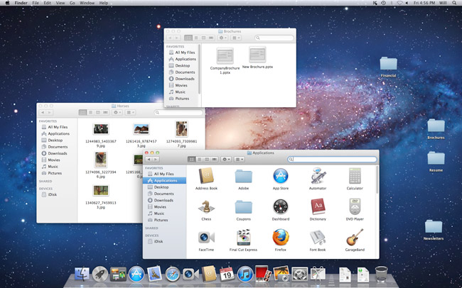

Microsoft Windows
Microsoft created the Windows operating system in the mid-1980s. There have been many different versions of Windows, but the most recent ones are Windows 10 (released in 2015), Windows 8 (2012), Windows 7 (2009), and Windows Vista (2007). Windows comes pre-loaded on most new PCs, which helps to make it the most popular operating system in the world.

macOS
macOS (previously called OS X) is a line of operating systems created by Apple. It comes preloaded on all Macintosh computers, or Macs. Some of the specific versions include Mojave (released in 2018), High Sierra (2017), and Sierra (2016). According to StatCounter Global Stats, macOS users account for less than 10% of global operating systems—much lower than the percentage of Windows users (more than 80%). One reason for this is that Apple computers tend to be more expensive. However, many people do prefer the look and feel of macOS over Windows.
Linux
Linux (pronounced LINN-ux) is a family of open-source operating systems, which means they can be modified and distributed by anyone around the world. This is different from proprietary software like Windows, which can only be modified by the company that owns it. The advantages of Linux are that it is free, and there are many different distributions—or versions—you can choose from. According to StatCounter Global Stats, Linux users account for less than 2% of global operating systems. However, most servers run Linux because it's relatively easy to customize.